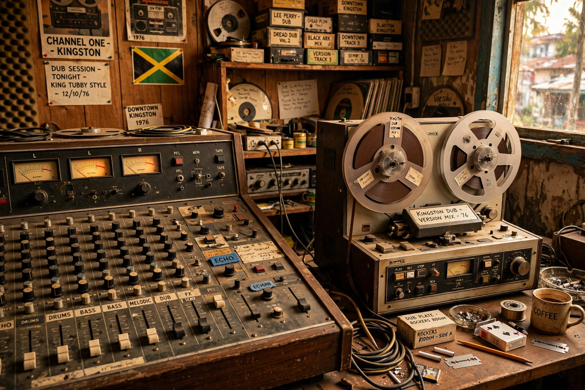

| Birth name | Osbourne Ruddock |
|---|---|
| Born | January 28, 1941, Kingston, Jamaica |
| Died | February 6, 1989 (aged 48), Kingston, Jamaica |
| Genres | Dub, reggae |
| Occupation | Sound engineer, producer, sound system operator |
| Years active | 1968–1989 |
King Tubby (born Osbourne Ruddock; January 28, 1941 – February 6, 1989) was a Jamaican sound engineer who profoundly influenced the development of dub music in the 1960s and 1970s. Working from his small studio in the Waterhouse district of Kingston, Tubby transformed the mixing desk into a musical instrument, stripping reggae tracks down to drum and bass and rebuilding them with echo, reverb, and dramatic dropouts.
Ruddock trained as a radio and television repairman and began as a disc cutter and engineer for producer Duke Reid at Treasure Isle studio. In 1968, in the often-retold story, he discovered the dub effect by accident while cutting a test disc, producing a version of a song with the vocal accidentally left off part of the track — an error that sound-system crowds loved. He built his own studio with a four-track mixer (including a famous "big knob" fader), ran the Hometown Hi-Fi sound system, and mentored engineers including Scientist and Prince Jammy.
Tubby's remixes for producers such as Bunny Lee, Augustus Pablo, and Lee "Scratch" Perry treated existing recordings as raw material — a radical reconception of the producer's role whose influence runs through hip-hop remixing, electronic dance music, dubstep, and post-rock. Landmark albums include Dub from the Roots (1974) and King Tubbys Meets Rockers Uptown with Augustus Pablo (1976).
King Tubby was shot dead outside his home in Duhaney Park, Kingston, on February 6, 1989, in an apparent robbery. His studio and methods continue to be studied as foundational to modern remix culture.